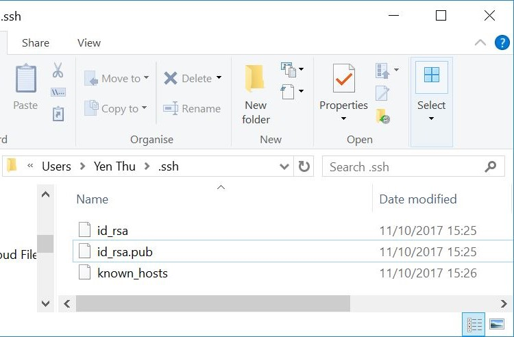

In this first week we learn about designing website with HTML and CSS, and working with Git in order to produce documentation and safely make changes to the projects.
This is a bold text
- This is an unordered list item
- This is an ordered list item
This line uses the "example" class. A class in CSS helps to group all objects with common properties together
This line uses the "keyword" identifer. An identifier in CSS helps to give unique properties to certain objects
This line uses the "test" tag. All HTML tags' properties can be defined in the CSS file.
| Part of the website frame | HTML Code | CSS code |
|---|---|---|
| PAGE HEADER |
<div class="header">
<br><img src="../media/foreground_picture.png" height="30%" width="30%">
</div>
|
.header {
padding: 0px;
text-align: center;
color: lightseagreen;
display: inline-block;
background-image: url(../media/background_pic.png);
background-size: cover
}
|
| TOP NAVIGATION BAR |
<div class="navtop">
<ul>
<li><a href="../index.html">Home</a></li>
<li><a href="#">Assignments</a></li>
<li><a href="#">Final Project</a></li>
<li><a href="about.html">About</a></li>
</ul>
</div>
|
.navtop ul {
list-style: none;
background-color: cadetblue;
text-align: right;
padding: 0;
margin: 0;
}
.navtop li {
width: 150px;
border-bottom: none;
height: 50px;
font-size: 1.2em;
display: inline-block;
margin-right: -4px;
line-height: 50px;
text-align: left;
}
|
| PAGE INDEX MENU AND PAGE CONTENT |
<div class="container">
<div class="row">
<div class="column left">
<h2 id="sideText"></h2>
<div class="navside">
<h2 id="side_text">Page index</h2>
<li><a href="#section1">1. HTML & CSS Basics</a></li>
<li><a href="#section2">2. Using Git</a></li>
<li><a href="#section3">3. Problems & Troubleshooting</a></li>
</div>
</div>
<div class="column right"> Here goes the page content...</div>
</div>
</div>
|
.row {
margin-right:15px;
margin-left:15px;
}
.column.left {
width: 25%;
list-style: none;
}
.navside {
position: fixed;
font-weight: 700;
color: sandybrown;
}
.navside ul {
width: 200px;
float: left;
}
.column.right {
width: 70%;
margin-bottom: 25px;
margin-left: 25px;
}
|
| FOOTER |
<div class="footer">
Thi Yen Thu Nguyen ● Fundamentals of Digital Fabrication 2017 ● FabLab Kamp-Lintfort
</div>
|
.footer {
background-color: whitesmoke;
font-weight: 700;
padding: 5px;
bottom: 0;
text-align: center;
position:fixed;
width: 100%
}
|
We downloaded and installed Git (for Windows in my case). Here are some notes Daniele mentioned while running the installer:
We should select OpenSSH as the SSH executable,Next, we configured the email and user name, and then generated our own private and public SSH key
ssh-keygen -t rsa -C "your_email"
It is not necessary to give a new name of the SSH key file or give a passphrase. By default, the SSH keys will be saved under the folder C:/Users/Your-user-name/.ssh
The generated public SSH key has to added to the Gitlab account in order to push and pull data from local repository on remote server
Then execute the commands to clone the repository to current working folder, line-by-line. For me the codes look like the following:
cd path/to/desired/folder ###change working directory to desired folder, if we open Git Bash from anywhere else other than the desired parent directory
git config --global user.name "Thu Nguyen" ###username configuration
git config --global user.email "thi-yen-thu.nguyen@hsrw.org" ###email configuration
git clone git@gitlab.hsrw.org:Thu.Nguyen/FoDF_Documentation.git ###clone the repo from remote server to local machine
cd FoDF_Documentation ###move to the sub-directory of the cloned local copy
touch README.md ###create the README markdown file
git status ###check the status of the repo, modified and new files are shown in red
git add README.md ###add the README file to index tree
git commit -m "add README.md" ###commit the README file to HEAD tree with a message
git push -u origin master ###push the changes in the repo to the remote server
The committed local changes could not be pushed because the SSH key pair is not put in the correct folder (at least for Windows). After I moved the SSH key pair to the folder C:/Users/Your-user-name/.ssh, everything worked fine again.
position:fixed;
This means keeping the footer at a fixed position of the screen, no matter where the mouse is scrolling to. Knowing this, I use the same CSS property for my side bar navigation so that it is easy to keep track of the page's content from anywhere on the page.